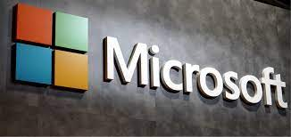

Bill Gates: O prodígio da Informatica
Quem é Bill Gates?
Tantas pessoas o conhecem, há anos, como uma das pessoas mais ricas do mundo que Bill Gates virou ponto de referência nesse quesito. Ser “mais rico que Bill Gates” é o sonho de muitos ambiciosos. Mas ele está longe de ser apenas isso.
Bill Gates e a Microsoft, empresa que ele fundou junto com Paul Allen em 1975, moldaram a forma que hoje nos relacionamos com tecnologia e computadores.
A revolução provocada pela adoção em massa de microcomputadores só foi possível graças à facilidade de uso dos sistemas desenvolvidos pela empresa, como o sistema operacional Windows e o pacote Office.
Foi o sucesso à frente da Microsoft que levou Bill Gates ao topo da lista de bilionários, à custa de muitas madrugadas em claro, durante as quais ele e seus parceiros de negócios escreveram os softwares da companhia. Todo esse trabalho aliado a uma boa dose de agressividade nos negócios e jogadas arriscadas.
Depois de décadas à frente da companhia, Gates decidiu se afastar, deixando a empresa nas mãos de sucessores mais próximos aos novos desafios da tecnologia. Mas isso não significa que ele tenha se aposentado. Longe disso.
Pai de três filhos, Bill Gates se envolveu em causas filantrópicas ao redor do mundo. Ele e sua esposa Melinda passaram a se dedicar a tentar resolver problemas globais de saúde, como a erradicação de doenças e acessibilidade de sistemas de saneamento.
Juntos, eles comandam a mais rica fundação global de filantropia, com cerca de US$ 50 bilhões de verba usada em projetos sociais.
Gates deu um passo além na caridade e montou, com seu amigo bilionário Warren Buffett, uma campanha global para que super-ricos doem grande parte de sua fortuna para causas sociais.
Como começou e como alcançou o sucesso?
William Henry Gates III, ou Bill Gates, é o filho do meio de uma família bem-sucedida de Seattle. Seu pai era advogado, conselheiro em diversas organizações civis e filantropo, autor do livro Desperte para a vida – Reflexões sobre a benção de existir. Dele, Bill herdou o nome, a dedicação aos livros e o lado filantropo.
De sua mãe, Mary, veio a competitividade e o tino para os negócios. Ela se formou em administração de empresas e teve assento em conselhos de administração de grandes companhias, muitas vezes como a única mulher à mesa.
Mary sempre esteva presente no dia a dia dos filhos e, frequentemente, isso gerava desentendimentos entre ela e o filho. A criança sorridente – apelidada de Happy Boy – desafiava a mãe em longas discussões que acabaram levando a família para a terapia.
Estudioso no estilo nerd, algo de que já disse se orgulhar, Bill Gates costumava ficar muito tempo lendo em seu quarto bagunçado e responder que estava ocupado ‘pensando’ quando sua mãe o chamava para alguma tarefa.
Até os 12 anos, ele estudou em um colégio público de sua cidade. Nessa idade, foi colocado em uma escola particular somente para meninos. Uma certa dose de rebeldia fez o garoto cogitar boicotar a prova de admissão para, propositalmente, não ser aprovado. Mas seu espírito competitivo falou mais alto. Ele fez a prova – e passou.
A amizade com Paul Allen
Foi nessa escola, o Colégio Lakeside, que Bill Gates conheceu um garoto dois anos mais velho, que havia criado um clube de programação e o convidou para fazer parte. O garoto se chama Paul Allen, que viria a ser, alguns anos depois, cofundador da Microsoft.
O colégio, vendo o potencial e o interesse de Gates, deu acesso aos computadores e o liberou de algumas aulas para estudar programação. Nos computadores do colégio, Gates escreveu seu primeiro código: um jogo da velha no qual humanos poderiam disputar contra uma máquina.
Naquela época, a genialidade de Bill Gates já era conhecida. Ele ganhou o primeiro lugar em uma competição estadual de matemática em uma disputa que incluiu não apenas crianças da sua idade, mas jovens até quatro anos mais velhos, que cursavam o último ano do ensino médio.
Premiações do tipo não surpreendiam Bill Gates. Ele já tinha percebido anos antes que era um dos poucos que, em sala, conseguia fazer contas matemáticas de cabeça. Era comum que fosse o primeiro a terminar tarefas enquanto seus colegas reclamavam que não tinham entendido nem o enunciado ainda.
Também foi nessa mesma escola, mais precisamente no laboratório de informática, que Gates conheceu aquele com quem desenvolveu seus primeiros negócios: Kent Evans.
Apesar de jovem, Kent tinha interesse na área de negócios, carregava uma pasta com diversas revistas sobre o assunto e despertou o interesse de Gates pelo tema.
Kent também fazia parte do Clube de Informática escolar e a fama dos estudantes levou empresas a encomendarem serviços de programação. Um dos pedidos veio de uma companhia local que precisava de um sistema para gerenciar o pagamento de funcionários.
Como Gates e Kent eram novos demais, Allen decidiu retirá-los do projeto, mas foi alertado por seu futuro sócio de que o problema matemático era grande demais e que, se precisasse, Gates poderia voltar ao projeto. No entanto, apenas na condição de líder. Foi o que ocorreu semanas depois.
Quando, algum tempo depois, sua escola se fundiu com outra unidade que era exclusiva para meninas, o próprio colégio recorreu à dupla Gates e Kent para montar o calendário escolar dos alunos.
Com a ajuda de Allen e muitas noites dormidas na cama que levaram para o laboratório, o grupo entregou o calendário escolar horas antes do início do ano letivo.
A dupla seguia inseparável até que foi interrompida de maneira trágica. Após fazer um curso de escalada em rocha, Kent se aventurou e sofreu um acidente. Ele não resistiu aos ferimentos da queda e faleceu, prematuramente.
Ao mesmo tempo, Gates e Allen começaram a ser procurados para entregar mais programas para empresas locais. Outras escolas se interessaram pelo sistema para gerar cronograma das aulas e a dupla também desenvolveu o software de controle para o departamento de trânsito local e para uma hidrelétrica.
Formado no colégio, Allen convidou Gates para desenvolverem o sistema de informática de uma empresa de água e luz de Vancouver, no estado americano de Washington.
Ainda um estudante do ensino médio, Gates trancou o colégio por um semestre e seu mudou com Allen para a cidade. Foi esse projeto que uniu a dupla que mudaria o rumo dos computadores pessoais.

A vida em Harvard
Em 1973, aos 18 anos, Bill Gates entrou em Harvard após tirar 1.590 de 1.600 pontos possíveis no SAT (correspondente ao Enem nos EUA), uma nota alcançada por menos de 1% de todos os jovens americanos. Ele se inscreveu para cursar matérias de Direito, mas incluiu em seu plano de estudo matérias de matemática e computação.
No segundo ano da faculdade, Paul Allen mostrou a Gates a capa da revista Popular Eletronic que estampava o primeiro microcomputador, o Altair 8800. “Parecia que a revolução tinha começado sem a gente”, lembra Bill Gates em um documentário sobre sua vida.
Para não ficar de fora, eles decidiram blefar. Ligaram para a Micro Instrumentation and Telemetry Systems (MITS), criadora do microcomputador, e disseram que estavam desenvolvendo um sistema para rodar na máquina. Só com a cara de pau e a coragem, conseguiram uma reunião para apresentar seus programas. Mas havia dois problemas: eles não tinham um Altair, nem tinham escrito nenhuma linha de código.
Com calendário apertado e já acostumados a virar noites trabalhando, criaram o que haviam prometido. As últimas linhas de código foram escritas à mão em um papel por Allen no voo a caminho da reunião.
Para a surpresa até dos jovens, o sistema rodou perfeitamente e a apresentação foi um sucesso. Era a primeira vez que um software comercial rodava em um computador pessoal.
Nascia a Microsoft.
Microsoft: fundação e saída
Contratados pela MITS para desenvolver o sistema que rodaria nos Altair 8800, Paul Allen e Bill Gates montaram uma empresa em um sobrado em Albuquerque, no estado americano do Novo México, e decidiram batizá-la com a junção das palavras ‘microcomputer’ e ‘software’.
A empresa foi registrada oficialmente como Microsoft em novembro de 1976.
O primeiro sistema desenvolvido para a Altair 8800, o Microsoft’s Altair BASIC, vazou e foi pirateado antes mesmo do seu lançamento.
Consternado, Gates escreveu uma carta aberta, expressando sua frustração com os entusiastas de computador que estavam usando o software de sua empresa sem ter pago por isso e defendeu que os desenvolvedores fossem remunerados por seu trabalho.
Esse era o primeiro capítulo de uma batalha que o seguiria por toda a vida: contra a pirataria.
Em 1980, a fama dos desenvolvedores da Microsoft alcançou a IBM, então líder do mercado global de computadores empresariais. A gigante planejava lançar seu microcomputador pessoal e precisava de um sistema operacional e outros programas.
Vendo a oportunidade, a Gates e Allen compraram uma versão do DOS e a adaptaram para vender para a IBM por uma tarifa de apenas US$ 50 mil.
Era pouco dinheiro para o que a IBM poderia pagar, mas a dupla estava interessada também no prestígio de ter seu programa selecionado para rodar no IBM PC.
Com isso, a Microsoft foi catapultada para se tornar a líder global de softwares e passou a ditar o rumo dos computadores pessoais.
Workaholic e agressivo
“Essa é a coisa mais estúpida que já ouvi” e “por que você não desiste e entra para o Corpo da Paz (a agência assistencialista dos EUA)?” são algumas das frases que seus antigos colegas de trabalho lembram de ter ouvido de Gates.
Workaholic e um tanto agressivo, ele sempre achava que os prazos para a entrega de um trabalho eram muito longos e costumava perguntar por que os funcionários simplesmente não trabalhavam mais – como ele fazia.
Para Gates, o melhor de trabalhar na Microsoft era que o emprego era de “meio período”. Ele brincava dizendo que, nas 12 horas restantes do dia, o funcionário estava livre para fazer o que quisesse.
Foi nessa cultura que, em novembro de 1985, nove anos após sua fundação, a Microsoft fez o lançamento do software que mudaria o mundo. Naquele momento, a primeira versão do Windows foi colocada à venda no varejo.
Em pouco mais de dez anos, o Windows alcançou o domínio de 98% de presença em microcomputadores, derrotando concorrentes de software fechado e os abertos como Linux.
Em 1998, o governo dos EUA iniciou uma investigação formal de antitruste contra a companhia. Para se dedicar à defesa da Microsoft e se preparar para o julgamento, Gates se afastou e indicou Steve Ballmer, seu colega de Harvard, para a presidência da companhia.
A condenação veio e a imagem de Gates ficou arranhada. Não só pela condenação, mas pela aparência arrogante do empresário durante seus depoimentos.
A Microsoft foi declarada um monopólio e poderia ser dividida. “Poderia ter sido o fim”, lembrou Gates em entrevista na série documentário Código Bill Gates, disponível na Netflix. A companhia recorreu e ganhou o direito de permanecer como uma só.
A empresa e o Departamento de Justiça dos Estados Unidos (DOJ) chegaram a um acordo. A Microsoft precisaria deixar os seus sistemas, como o Windows, mais abertos a programas de terceiros.
Durante cinco anos, um painel formado por três especialistas independentes teve acesso a todo o código-fonte desses programas para confirmar que a Microsoft estava cumprindo o acordo. Vários estados americanos tentaram reverter esse acordo, sem sucesso.
A mudança de rumo da Microsoft
Até o início dos anos 2000, a hegemonia da Microsoft era incontestável. A companhia tinha em seu portfólio produtos de sucesso como o pacote Office, Windows, o portal MSN, o navegador Internet Explorer, a TV a cabo MSNBC e o console Xbox, lançados entre 1990 e o início dos anos 2000.
Mas, em meados da década de 2000, a companhia começou a perder sua liderança em softwares ao não entrar para outra revolução tecnológica: a dos telefones celulares.
Assim, a Microsoft perdeu várias batalhas: a dos tocadores de música para a Apple, a de anúncios online e sistemas operacionais de celular para o Google e a de redes sociais e mensageiros para o Facebook.
A empresa ainda tentou correr contra o tempo perdido usando seu caixa robusto em decisões de negócio, em alguns casos, duvidosas. Após falhar em comprar o Yahoo, comprou Skype, Nokia e LinkedIn, despejando bilhões de dólares em cada operação.
Mas o que parecia uma empresa decadente com futuro ameaçado deu lugar a uma virada que começou com a troca do comando. Em 2014, Ballmer deixou a presidência da empresa para dar lugar ao indiano Satya Nadella, que deu uma guinada na companhia e passou a focar em soluções na nuvem e inteligência artificial.
O mercado reconheceu o esforço. Na bolsa de Nova York, a Microsoft segue batendo recordes históricos e é uma das empresas mais valiosas do mundo, com seu valor de mercado superando o US$ 1 trilhão. Para quem adquiriu ações no IPO em março de 1986, o ganho é superior a 12.000%.
Longe da gestão diária da empresa desde 2000, Gates hoje dedica um dia da semana para a Microsoft, com cargo de conselheiro. Após deixar a presidência, a partir de 2008, passou a se dedicar com mais afinco aos projetos de filantropia de sua organização Bill & Melinda Gates.
Fundação Bill & Melinda Gates: filantropia e pesquisa científica
Formada em 2000, a fundação registrou anos de pouco sucesso ao desenvolver projetos de assistencialismo como a doação de computadores para crianças carentes.
Foi com a leitura de um artigo no The New York Times que Melinda e Bill perceberam a real vocação da fundação.
O texto de Nichols D. Kristof mostrava, com números, que muitas crianças ainda morriam de diarreia em países subdesenvolvidos. Esse dado chocou o casal, que não sabia que uma doença tão simples de combater era capaz de matar após toda a evolução da medicina.
Ávido leitor, Gates passou a estudar profundamente temas de saúde global e, junto com Melinda, redirecionou a fundação para atacar desafios globais. A abordagem e as soluções para temas de saúde viriam do que Bill e Melinda tem de melhor: foco, dados e tecnologia.
O casal convida engenheiros e pesquisadores para reavaliar soluções para problemas sociais como saneamento. Convencidos de que é economicamente impossível levar caros sistemas de coleta e tratamento de esgoto para toda a população global, a fundação desenvolveu uma competição para repensar o vaso sanitário para que este novo modelo pudesse tratar o esgoto, sem a necessidade de água ou encanamentos externos – e a um custo acessível.
Outro foco da organização é a erradicação da pólio por meio do uso de estatística, mapeamento por satélites e modelos para prever surtos e aprimorar a vacinação em países pobres e conflituosos como Nigéria e Afeganistão.
O casal Gates também se dedica a descarbonizar o planeta com soluções inovadoras como captura de carbono da atmosfera e outras bastante controversas como desenhar reatores nucleares seguros, que usam rejeito de outras plantas para gerar energia.
Além da atuação em temas de saúde global, a fundação também financia bolsas de estudo em universidades, apoia ações de educação financeira e iniciativas para aprimorar a agricultura familiar, além de doações pontuais para áreas afetadas por desastres ambientais.
O dinheiro para essa empreitada vem de bilionários como o próprio casal, que doou parte de sua fortuna para a filantropia. O maior dos doadores é o megainvestidor e amigo de Bill Gates, Warren Buffet, que destinará quase a totalidade de seu patrimônio, estimado em mais de US$ 80 bilhões, para a fundação.
A fundação Bill & Melinda Gates possui cerca de US$ 50 bilhões em ativos e é considerada a maior empresa de filantropia do mundo.
Como se não fosse o bastante, Bil Gates também é bastante ativo na internet. Está presente nas redes sociais e produz conteúdo para o seu blog, onde publica artigos, entrevistas e resenhas de livros.
Todo conteudo deste site foi retirado da pagina InfoMoney apenas para fins de estudar HTML e CSS e todas imagens foram retiradas do Google Imagens. Este site não tem intenção de arrecadar qualquer valor e caso necessário poderá ser retirado do ar.